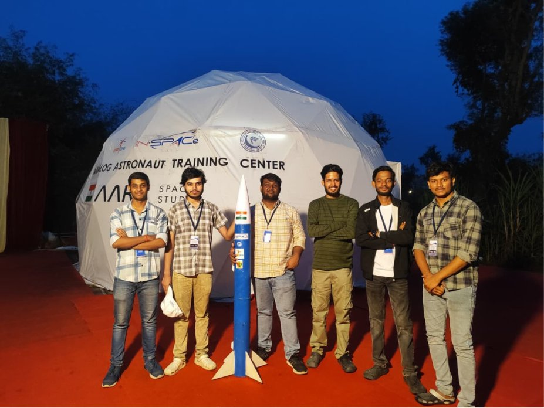
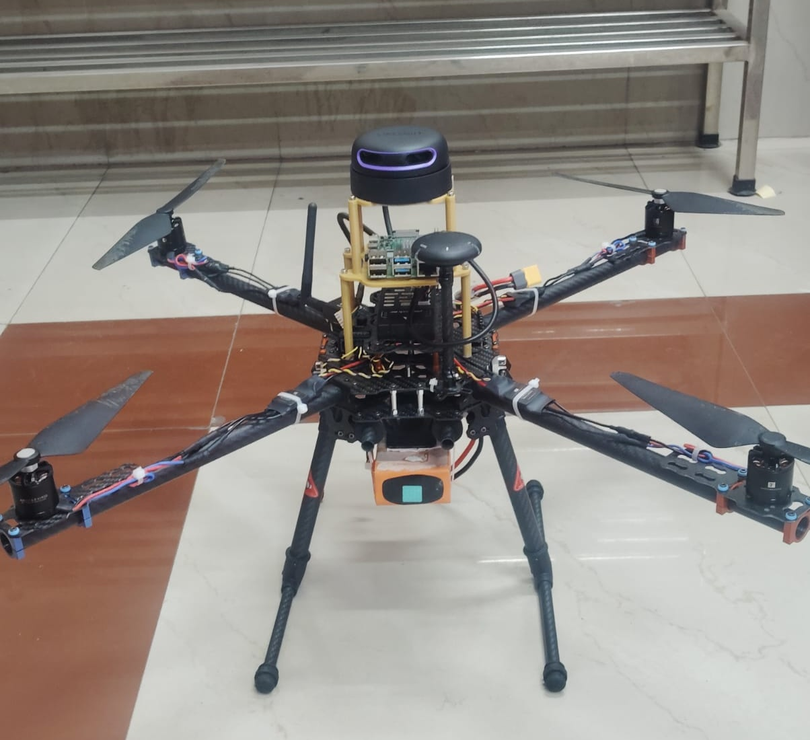
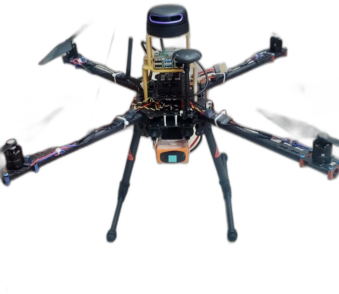

Lunar & Planetary Rover
6-wheel rocker-bogie exploration platform with custom regolith wheels and autonomous hazard navigation.
MissionISRO IRoC-U '24 • Semi-Finalist (Top 12)
A deep-dive showcase of planetary rovers, high-impulse sounding rockets, autonomous hexacopter UAVs, and scientific payload systems designed, fabricated, and validated by BIT Sindri students.
6-wheel rocker-bogie exploration platform with custom regolith wheels and autonomous hazard navigation.
Multi-rotor aerial platform with onboard vision, SLAM, and GPS-denied navigation for planetary terrain.

Physical single-stage solid motor sounding rocket (1.66m) with CANSAT telemetry payload and dual parachute recovery, demonstrated at IN-SPACe Ahmedabad.

Autonomous GPS-denied UAV engineered for Drone Federation of India (DFI). Cartographer 2D LiDAR SLAM verified; currently in survivor detection pipeline testing.

Autonomous survivor detection, visual tracking, and GPS-denied 3D localization quadcopter for disaster zones.
Custom-fabricated high-lift fixed-wing aircraft engineered for aerodynamic payload capacity and flight stability.
Computer vision and geospatial AI pipeline for satellite data processing and automated environmental feature extraction.
Explore the interdisciplinary engineering hardware powering Team ARC's space robotics, planetary rovers, and autonomous aerial platforms.


Custom-engineered 6-wheel rocker-bogie differential suspension, CNC-milled 6061-T6 aluminum chassis linkages, and curved-grouser regolith traction wheels designed for loose lunar terrain traversal.
Real-time ROS 2 Humble node graph handling Visual SLAM, 3D point-cloud obstacle mapping, and autonomous GPS-denied planetary waypoint navigation algorithms.
Custom 24V isolated multi-rail power distribution bus with redundant STM32 ARM microcontrollers executing deterministic microsecond-level PID closed-loop motor actuation.
Dual-band 2.4/5.8 GHz directional telemetry and low-latency FPV video downlink streaming real-time attitude orientation, motor draw, and payload states to base camp.
Watch Team ARC's lunar rover platform tackling boulder obstacles, testing rocker-bogie kinematics, and running night navigation trials on the BIT Sindri testbed.
Official physical trials of Team ARC's 6-wheel rocker-bogie planetary rover on the outdoor proving ground at BIT Sindri, demonstrating hub motor synchronization, differential pivot articulation, and autonomous stability.
Full-scale rocker-bogie 6-wheel rover conquering uneven rock piles and rocky soil during off-road locomotion validation.
High-def close-up demonstrating dynamic load balancing, passive suspension pitch equalization, and chassis stabilization.
Verification of high-output LED floodlights, onboard electronics cooling, and autonomous path tracking under low-light conditions.
Finite element analysis and SolidWorks rotational rendering of the custom lightweight regolith traction wheel.
Real-time RViz 2D occupancy grid mapping and laser-scan loop closure in a GPS-denied indoor test environment running on our onboard companion computer.
Digital 3D lunar terrain mapping and simulation environment developed for planetary rover locomotion, obstacle clearance, and regolith interaction studies.
Each challenge Team ARC has taken part in, with the platform, the mission and where we stand.
| Parameter | ISRO IRoC-U '24 | ISRO IRoC-U '26 | IN-SPACe '25 | eYantra '26-27 | NIDAR 2.0 |
|---|---|---|---|---|---|
| Platform | Planetary rover | Autonomous UAV | Model rocket | Quadcopter | Quadcopter |
| Mission | Lunar surface exploration | GPS-denied aerial exploration | Design, build and launch a rocket | Find survivors in a disaster zone and estimate their coordinates | Search, map and locate survivors in a 15 x 15 m maze (DFI) |
| Status | National Semi-Finalist (2024) | National Semi-Finalist (2026) | National Finalist (2025) | Stage 1 completed, result awaited | SLAM Tested • Survivor Detection Phase |
ARC provides lab resources, 3D printing, CNC machining, flight controllers, and mentor guidance for ambitious student builders.